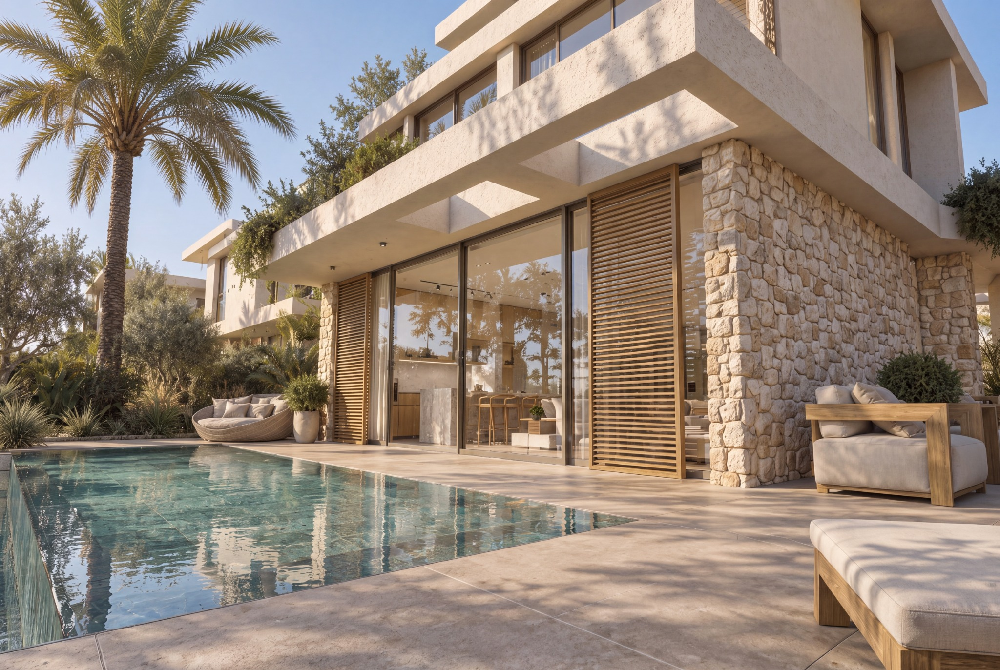

SENIOR 3D ARTIST & ART DIRECTOR
Architecture,
seen and felt.
Architectural imagery, interior concepts, and cinematic storytelling.
I’m based in Lebanon and work on international projects across architecture, hospitality, residential design, and events.

01 / FEATURED PROJECT
AL MAR
A coastal development of 12 villas.
From 3D scenes to a cinematic experience.
For AL MAR, a coastal development of 12 villas, I developed the interior concepts directly in Autodesk 3ds Max, selected the furniture and materials, and modeled and rendered the scenes with V-Ray. I then used AI tools to enhance the imagery, develop additional views, and create animation.
My role: creative direction, interior concept design, 3D visualization, AI-assisted imagery and animation, music creation, compositing, and editing.
THE WORKFLOW
3ds Max + V-Ray · Modeling & rendering
GPT, Nano Banana + Seedream · Image enhancement & additional imagery
Kling + Seedance · AI-assisted animation
Suno · Project-specific music
After Effects + CapCut · Compositing, editing & music integration
02 / SELECTED IMAGERY
The craft behind the image.
A selection of my 3D visualization work across residential, hospitality, and commercial projects. Selected images include AI-assisted enhancements.
03 / EVENTS & EXHIBITIONS
Ana Arabia Expo
Saudi Arabia · Five editions across five different years.
I contributed 3D design and visualization to Ana Arabia Expo across five different years. My event experience also includes Kitab events, Cyber events, and fashion show environments.
LET’S WORK TOGETHER
Bring your next
project into view.
I’m available for remote opportunities and project collaborations.
Samir.khoury27@gmail.com ↗+961 3 244 373 · Hazmieh, Lebanon
Download CV ↓